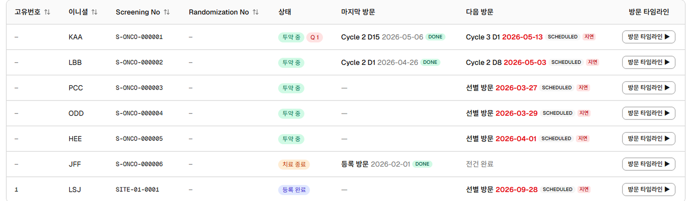
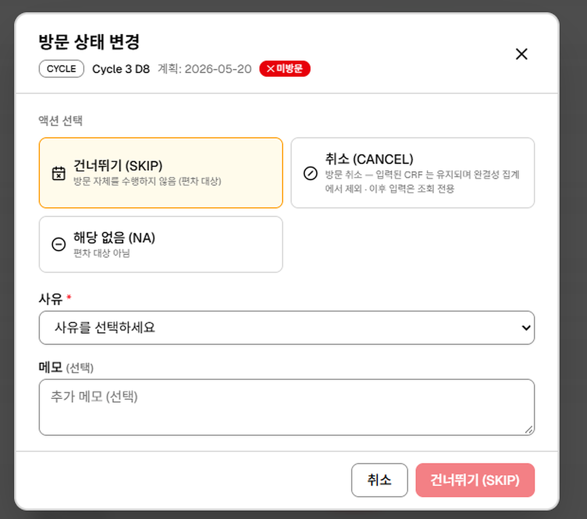
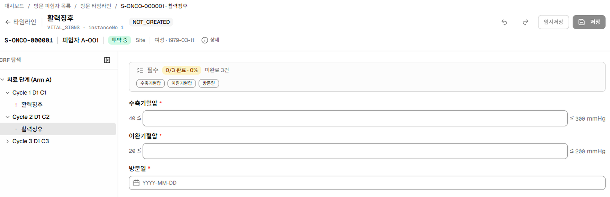
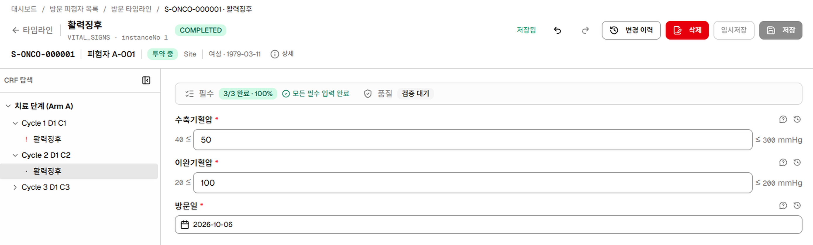
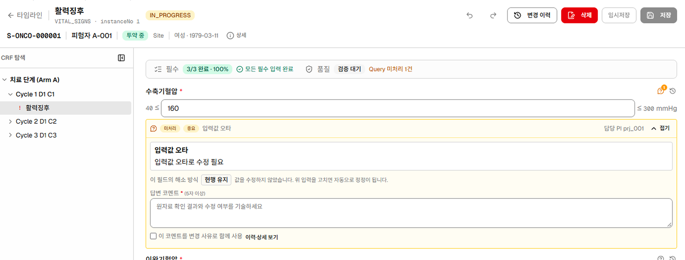

데이터 입력
SCR-VISIT-010·003·007 · SCR-CRF-005 · 워크리스트 · 방문 타임라인 · CRF 입력 · Query 답변
데이터 입력 목록
- 1.1화면 구성
- 1.2목록 읽는 법
1.1화면 구성
개요
매일 데이터를 입력하는 사람이 가장 먼저 여는 화면입니다. 담당 피험자마다 마지막으로 수행한 방문과 다음에 예정된 방문을 한 줄로 모아, 오늘 무엇을 해야 하는지 한눈에 보게 합니다. 실제 입력은 이 목록에서 바로 하지 않고, 방문 타임라인을 거쳐 해당 방문의 CRF 로 들어가 수행합니다.
화면 설명

왼쪽 메뉴 연구 운영 > 데이터 입력 — 이 화면의 상시 입구입니다.
검색 — Screening No 또는 고유번호로 행을 좁힙니다.
상태 필터 5종 — 전체 · 진행 · 전건완료 · 방문 실적 없음 · Terminal 입니다. 각 분류의 뜻은 1.2 의 표를 참조하십시오.
방문 타임라인 ▶ — 그 피험자의 방문 전체를 엽니다 2.1. 행의 아무 곳이나 선택해도 같은 화면으로 이동합니다.
이동 경로는 대시보드 / 방문 피험자 목록 입니다.
제목 아래에 이 목록이 무엇인지와 전체 건수가 표시됩니다. 담당 Site 가 정해진 역할에게는 내 Site 고정 배지가 함께 표시되며, 이 때 목록은 자기 Site 피험자만으로 자동 제한됩니다.
상태 열 — 피험자의 현재 상태와 미처리 Query 건수입니다 1.2.
마지막 방문 열 — 직전에 수행이 끝난 방문과 실제 방문일입니다.
다음 방문 열 — 가장 가까운 미완료 예정 방문과 예정일입니다. 두 열의 날짜는 축이 다릅니다 1.2.
표시 건수 · 페이지 크기 · 쪽 이동 — 목록 하단에 함께 표시됩니다.
접근 경로
- • 왼쪽 메뉴 연구 운영 > 데이터 입력
- • 프로젝트 대시보드 오늘 예정 방문 위젯의 행
- • 프로젝트 대시보드 오늘 예정 방문 위젯의 방문 워크리스트 →
- • 프로젝트 대시보드 방문 현황 위젯의 타임라인
유의사항
오해하기 쉬운 동작
- • 담당 Site 가 정해진 역할(연구책임자·연구간호사·임상연구모니터요원)에게는 자기 Site 피험자만 표시됩니다. 목록에 있어야 할 피험자가 보이지 않으면 먼저 Site 배정을 확인하십시오 — 검색이나 필터로는 범위 밖 피험자를 불러올 수 없습니다.
1.2목록 읽는 법
개요
한 행이 피험자 한 명입니다. 가운데 두 칸이 이 화면의 핵심으로, 왼쪽은 이미 끝난 방문이고 오른쪽은 앞으로 할 방문입니다. 두 칸과 액션 열은 모두 그 피험자의 방문 타임라인으로 이어지며, 방문 칸을 선택하면 해당 방문이 선택된 상태로 열립니다.
화면 설명

마지막 방문 칸 — 선택하면 그 방문이 선택된 상태로 타임라인이 열립니다. 방문명 옆 날짜는 실제 방문일입니다.
다음 방문 칸 — 선택하면 그 방문이 선택된 상태로 타임라인이 열립니다. 방문명 옆 날짜는 예정일입니다.
방문 타임라인 ▶ — 특정 방문을 지정하지 않고 그 피험자의 방문 전체를 엽니다.
상태 — 피험자의 현재 진행 상태입니다 (“투약 중” · “치료 종료” · “등록 완료” 등).
Q N — 그 피험자의 미처리 Query 건수입니다. 0 건이면 표시되지 않습니다.
DONE — 마지막 방문 칸에만 붙는 수행 완료 표시입니다.
SCHEDULED 와 지연 — 앞은 예정 상태이고, 뒤는 허용 기간(Window)을 넘겼다는 경고입니다. 기간에 막 들어선 방문에는 임박 이 표시됩니다.
전건 완료 — 수행 실적이 있고 더 할 방문이 없는 상태입니다. 예정 방문 없음(주황)과 혼동하지 마십시오 (아래 표 참조).
상태 필터 4종 (전체 제외)
| 필터 | 그 분류에 들어가는 행 | 해야 할 일 |
|---|---|---|
| 진행 | 다음 방문이 남아 있는 피험자 | 예정일에 맞춰 방문과 입력을 수행 |
| 전건완료 | 수행 실적이 있고 다음 방문이 없는 피험자 | 없음 — 정상 종료 상태 |
| 방문 실적 없음 | 수행 실적도 예정 방문도 둘 다 없는 피험자 | 조치 필요 — 방문이 전개되지 않은 원인을 확인 |
| Terminal | 종료 상태로 굳은 피험자 | 없음 — 조회만 가능 |
유의사항
필수 확인 데이터 손상 · 폼 완료 불가
- • 「전건 완료」 와 「예정 방문 없음」 은 뜻이 반대입니다. 앞은 할 일이 없는 것이고, 뒤는 방문이 하나도 전개되지 않아 원인을 찾아야 하는 상태입니다. 두 문구가 같은 칸에 표시되므로 색(회색 · 주황)과 문구를 함께 확인하십시오.
방문 타임라인
- 2.1타임라인 구성
- 2.2방문 행과 CRF 행
- 2.3방문 상태 변경
- 2.4건너뛰기 결과
2.1타임라인 구성
개요
한 피험자의 방문 전체를 연구 일정 순서대로 보여주는 화면입니다. 방문은 선별 단계 · 치료 단계 같은 그룹으로 묶여 있고, 주기 치료는 그 안에서 다시 Cycle 로 나뉩니다. 데이터 입력도, 방문 상태 변경도 모두 이 화면에서 시작합니다.
화면 설명

Cycle 수동 추가 — 정의된 주기 외에 Cycle 을 더 만듭니다. 직전 Cycle 이 종결되어야 선택할 수 있습니다.
방문 수동 추가 — 계획에 없던 방문(비계획·상시 방문)을 추가합니다.
Gantt 타임라인 탭 — 같은 내용을 일정 막대 형태로 봅니다. 기본은 방문 그룹 탭입니다.
이동 경로는 대시보드 / 방문 피험자 목록 / 피험자 · 방문 타임라인 입니다. 피험자 화면에서 들어오면 경로가 달라집니다.
피험자 식별 줄 — Screening No · 피험자 번호 · 피험자 상태 · Site 입니다.
방문 집계 — 총 건수 · 방문 수행 · 방문 진행 · 방문 예정 · 미방문 입니다. 미방문이 남아 있으면 그 방문을 먼저 정리해야 합니다 2.3.
방문 그룹 — 연구 일정의 큰 마디입니다. 괄호 안 숫자는 그 그룹의 방문 수이며, 제목을 선택하면 접고 펼 수 있습니다.
그룹 오른쪽 집계 — 그 그룹 안의 상태별 건수입니다.
방문 행의 구성 — 기준 · 계획일 · 실제일 · 허용 기간 · 상태 배지 순으로 표시됩니다.
결합된 CRF 없음 — 그 방문에 연결된 CRF 가 없다는 뜻입니다. 입력할 자료가 없는 방문이며, 연결은 방문 정의의 CRF 매핑에서 관리합니다.
접근 경로
- • 데이터 입력 목록 → 행 선택 또는 방문 타임라인 ▶ 1.2
- • 데이터 입력 목록 → 마지막 방문 · 다음 방문 칸 (해당 방문이 선택된 상태로 열림)
- • 피험자 목록 → 행의 액션 메뉴 → 방문
- • 프로젝트 대시보드 방문 현황 위젯 → 피험자 선택
유의사항
오해하기 쉬운 동작
- • 방문 집계의 「미방문」 은 그대로 두면 사라지지 않습니다. 예정일이 지난 방문은 수행하거나, 건너뛰기·취소·해당 없음 중 하나로 사유와 함께 정리해야 합니다 2.3. 정리하지 않은 미방문은 그 피험자의 자료가 완결되지 않은 것으로 집계됩니다.
2.2방문 행과 CRF 행
개요
방문 행 왼쪽의 펼침 표시를 선택하면 그 방문에 결합된 CRF 가 한 줄씩 나타납니다. CRF 행을 선택하면 입력 화면으로 이동합니다 3.1. 방문 행을 선택하면 화면 아래에 그 방문의 상세가 열리고, 거기에서 상태 변경과 이력 확인을 수행합니다.
화면 설명

방문 행 — 선택하면 아래에 그 방문의 상세가 열립니다. 왼쪽 펼침 표시로 결합된 CRF 목록을 펼칩니다.
CRF 행 — 선택하면 그 CRF 의 입력 화면으로 이동합니다 3.1.
상태 변경 — 방문의 수행 여부를 기록하거나 건너뛰기·취소·해당 없음으로 정리합니다 2.3.
이력 — 그 방문에 일어난 상태 변경 기록을 확인합니다.
그룹 제목과 방문 수입니다 — 치료 단계 (Arm A) 처럼 시험군이 함께 표시됩니다.
그룹 오른쪽 집계 — 그 그룹의 상태별 건수입니다.
Cycle 과 그 안의 방문 구분입니다. 주기 치료는 같은 방문이 Cycle 마다 반복됩니다.
방문 단위 필수 입력 집계 — 그 방문에 결합된 CRF 의 필수 항목이 얼마나 채워졌는지입니다.
CRF 상태 · Query 상태 열 제목 — 아래 CRF 행의 배지가 이 두 축을 나타냅니다.
CRF 행의 배지 — 왼쪽부터 필수 입력 집계 · 입력 상태 · Query 표시 입니다. Q 가 보이면 그 CRF 에 처리할 Query 가 있습니다 3.3.
선택한 방문의 상세 머리 — 방문명 · 방문 유형 · 현재 상태 입니다.
상세의 주요 값 — 계획일 · 실제일 · 허용 기간(Window) · Visit-Event 상태 · Cycle 번호 입니다.
유의사항
오해하기 쉬운 동작
- • 방문 행의 집계와 CRF 행의 집계는 범위가 다릅니다. 방문 행은 그 방문에 결합된 CRF 전체를 합산한 값이고, CRF 행은 그 CRF 하나의 값입니다. 방문이 100% 로 보여도 결합된 CRF 가 하나뿐이면 같은 숫자가 되므로, 어느 쪽 숫자를 보고 있는지 확인하고 판단하십시오.
2.3방문 상태 변경
개요
예정일이 지났는데 수행되지 않은 방문을 정리하는 창입니다. 현재 상태에서 가능한 액션만 표시되므로, 캡처처럼 미방문 상태에서는 건너뛰기·취소·해당 없음 세 가지가 나타납니다. 어느 것을 선택하든 사유 입력이 필수이며, 기록은 감사 추적에 남습니다.
화면 설명

건너뛰기 (SKIP) — 방문 자체를 수행하지 않았다는 기록입니다. 편차(Deviation) 대상이 됩니다.
취소 (CANCEL) — 입력된 CRF 는 삭제되지 않고 완결성 집계에서만 제외되며, 이후 입력은 조회 전용이 됩니다.
해당 없음 (NA) — 이 피험자에게 해당하지 않는 방문입니다. 편차 대상이 아닙니다.
사유 — 필수입니다. 건너뛰기는 프로젝트에 등록된 사유 목록에서 선택하며, 목록을 불러오지 못하면 직접 입력란으로 대체됩니다.
메모 — 선택 입력입니다. 목록의 사유만으로 설명이 부족할 때 덧붙입니다.
실행 버튼 — 선택한 액션의 이름이 표시되며, 사유를 선택하기 전에는 흐리게 표시되어 선택할 수 없습니다. 옆의 취소 는 창만 닫습니다.
대상 방문 — 방문 유형 · 방문명 · 계획일 · 현재 상태 입니다. 상태 배지가 “✕ 미방문” 인지 확인한 뒤 진행하십시오.
닫기 — 창을 닫습니다.
액션 선택 — 선택한 카드에 색 테두리가 표시됩니다. 카드를 바꾸면 입력하던 사유와 메모는 초기화됩니다.
사유 옆의 * 는 필수 항목 표시입니다.
메모 옆의 (선택) 은 비워 두어도 된다는 표시입니다.
액션 4종 — 상황에 맞는 것만 표시됩니다
| 액션 | 표시되는 상황 | 편차 대상 | 되돌리기 |
|---|---|---|---|
| 방문 수행 처리 | 방문이 진행 중일 때 | 수행일에 따라 판정 | 되돌릴 수 없음 |
| 건너뛰기 (SKIP) | 미방문 · 수행 기록 없음 | 대상 | 복원 가능 |
| 취소 (CANCEL) | 미방문 또는 진행 중 | 대상 아님 | 복원 가능 |
| 해당 없음 (NA) | 미방문 · 수행 기록 없음 | 대상 아님 | 복원 가능 |
유의사항
필수 확인 데이터 손상 · 폼 완료 불가
- • 주기(Cycle) 방문을 「취소」 하면 다음 Cycle 을 추가할 수 없게 됩니다. 종결로 인정되는 것이 수행 · 건너뛰기 · 해당 없음이고 취소는 제외되기 때문입니다. 잘못 만든 Cycle 은 취소 대신 해당 없음으로 정리하십시오.
2.4건너뛰기 결과
개요
건너뛰기를 실행하면 창이 닫히고 타임라인으로 돌아옵니다. 그 방문 행의 상태 배지가 바뀌고 방문명에 취소선이 표시되어, 목록에서 바로 구별됩니다. 실제일은 끝까지 비어 있으며, 입력한 사유는 그 방문의 이력에서 확인할 수 있습니다 2.2.
화면 설명

방문이 속한 그룹과 Cycle 입니다 — 건너뛰기는 그 방문 하나에만 적용되고 같은 그룹의 다른 방문에는 영향을 주지 않습니다.
방문 행 — 방문명에 취소선이 표시됩니다.
행 가운데의 실제 가 — 로 남습니다. 옆의 허용 기간은 계획값 그대로 유지됩니다.
행 오른쪽 끝의 ⊘ 건너뜀 — 건너뛰기 처리의 결과 표시입니다. 되돌리려면 그 방문을 다시 선택해 상태 변경 > 복원을 수행합니다.
결합된 CRF 없음 — 이 방문에 연결된 CRF 가 없다는 뜻이며, 건너뛰기와는 무관한 별개의 표시입니다.
방문 상태 배지 7종
| 배지 | 뜻 | 입력 가능 여부 |
|---|---|---|
| ○ 방문 예정 | 예정일이 아직 남은 방문 | 가능 |
| ◐ 방문 진행 | 수행이 시작된 방문 | 가능 |
| ✓ 방문 수행 | 수행이 끝난 방문 | 가능 |
| ✕ 미방문 | 예정일이 지났는데 정리되지 않은 방문 | 가능 — 정리 필요 |
| ⊘ 건너뜀 | 수행하지 않기로 기록한 방문 (편차 대상) | 불가 |
| ⊗ 취소 | 취소한 방문 — 기존 CRF 는 유지 | 조회 전용 |
| – 해당 없음 | 이 피험자에게 해당하지 않는 방문 | 불가 |
유의사항
필수 확인 데이터 손상 · 폼 완료 불가
- • 건너뛰기는 편차(Deviation) 로 집계됩니다. 되돌릴 수는 있지만 처리와 복원이 모두 이력에 남으므로, 사유를 확인하지 않은 채 임시로 눌러 보는 용도로 사용하지 마십시오. 방문을 아직 수행할 수 있다면 상태를 바꾸지 말고 그대로 두십시오.
CRF 데이터 입력
- 3.1입력 화면
- 3.2저장 완료
- 3.3Query 답변
3.1입력 화면
개요
실제 자료를 입력하는 화면입니다. 왼쪽은 같은 피험자의 CRF 를 오가는 탐색 영역이고, 오른쪽이 입력 영역입니다. 처음 들어왔을 때는 자료가 아직 만들어지지 않은 상태이며, 저장을 수행하는 시점에 비로소 생성됩니다 — 화면을 열어만 두고 나가면 아무것도 남지 않습니다.
화면 설명

수축기혈압 — 숫자 입력란입니다. 양옆의 값이 허용 범위입니다.
이완기혈압 — 같은 방식으로 입력합니다.
방문일 — 달력 아이콘으로 날짜를 선택하거나 직접 입력합니다.
임시저장 — 입력 중인 내용을 임시로 보관합니다. 검증을 거치지 않고 감사 기록도 남지 않으므로 확정 저장이 아닙니다.
저장 — 입력을 확정합니다. 이때 자료가 생성되고 검증과 감사 기록이 함께 수행됩니다 3.2.
이동 경로는 대시보드 / 방문 피험자 목록 / 방문 타임라인 / 피험자 · CRF명 입니다.
NOT_CREATED — 아직 저장한 적이 없다는 표시입니다. 저장하면 IN_PROGRESS 또는 COMPLETED 로 바뀝니다 3.2.
CRF 코드와 회차 번호입니다. 같은 방문에서 반복 수집하는 CRF 는 회차가 늘어납니다.
피험자 식별 줄 — Screening No · 피험자 번호 · 상태 · Site · 성별 · 생년월일 입니다. 상세 로 피험자 정보를 확인합니다.
CRF 탐색 — 같은 피험자의 다른 방문·CRF 로 바로 이동합니다. 접기 아이콘으로 영역을 숨길 수 있습니다.
현재 열려 있는 CRF 가 강조 표시됩니다. 느낌표 표시가 붙은 항목은 처리할 것이 남은 CRF 입니다.
필수 입력 집계 — “0/3 완료 · 0%” 와 미완료 건수입니다. 필수 항목을 모두 채우기 전에는 입력 완료로 집계되지 않습니다.
미완료 항목 목록 — 선택하면 해당 입력란으로 이동합니다. 항목이 많은 양식에서 빠진 칸을 찾을 때 사용합니다.
입력란 양옆의 허용 범위와 단위입니다. 범위를 벗어난 값은 저장할 때 검증에 걸립니다.
유의사항
필수 확인 데이터 손상 · 폼 완료 불가
- • 「임시저장」 은 확정 저장이 아닙니다. 임시저장한 내용은 검증을 거치지 않고 감사 기록도 남지 않으므로, 그대로 화면을 떠나면 그 자료는 정식 자료로 집계되지 않습니다. 입력을 마쳤으면 반드시 저장으로 확정하십시오.
3.2저장 완료
개요
저장을 수행하면 자료가 생성되고 화면 곳곳의 표시가 함께 바뀝니다. 필수 항목을 모두 채운 상태로 저장했으므로 입력 상태는 완료가 되었고, 아직 검증을 받지 않았으므로 품질 상태는 검증 대기입니다. 자료가 생기면서 변경 이력과 삭제 가 함께 나타납니다.
화면 설명

저장 — 입력을 확정합니다.
상태가 COMPLETED 로 바뀌고 저장됨 이 표시됩니다. 필수 항목이 남아 있었다면 IN_PROGRESS 가 됩니다.
변경 이력 — 누가 언제 어떤 값을 어떻게 바꿨는지 확인합니다. 저장한 자료가 있어야 나타납니다.
삭제 — 입력한 자료를 거둡니다. 기록은 남으며 사유 입력이 필요합니다.
필수 입력 집계가 “3/3 완료 · 100%” 와 “모든 필수 입력 완료” 로 바뀝니다.
품질 상태 — 검증 대기 입니다. 원자료 대조(SDV)가 끝나면 SDV 완료, 처리할 Query 까지 없으면 CLEAN 이 됩니다.
항목마다 붙는 두 아이콘 — 왼쪽은 그 항목의 Query, 오른쪽은 그 항목의 변경 이력입니다. 자료가 생성된 뒤에 표시됩니다.
저장된 값이 입력란에 그대로 표시됩니다. 값을 고치고 다시 저장할 때는 변경 사유를 요구받습니다.
CRF 탐색에서 현재 CRF 가 강조 표시됩니다.
이동 경로는 저장 전과 같습니다 — 저장은 화면을 이동시키지 않습니다.
입력 상태와 품질 상태 — 서로 다른 두 축
| 축 | 표시 | 뜻 |
|---|---|---|
| 입력 상태 | NOT_CREATED | 아직 저장한 적이 없음 (자료 미생성) |
| 입력 상태 | IN_PROGRESS | 저장했으나 필수 항목이 남음 |
| 입력 상태 | COMPLETED | 필수 항목을 모두 채워 저장함 |
| 품질 상태 | 검증 대기 | 원자료 대조(SDV)가 끝나지 않음 |
| 품질 상태 | SDV 완료 | SDV 는 끝났으나 미완결 또는 Query 잔존 |
| 품질 상태 | CLEAN | 입력 완료 + SDV 전건 + 처리할 Query 없음 |
유의사항
오해하기 쉬운 동작
- • 입력 완료와 품질 완결은 다릅니다. “3/3 완료 · 100%” 는 필수 칸을 다 채웠다는 뜻일 뿐이고, 그 값이 의료기관 원자료와 일치하는지는 아직 확인되지 않았습니다. 자료가 최종 확정되려면 원자료 대조(SDV)와 Query 처리가 함께 끝나야 합니다.
3.3Query 답변
개요
입력한 값에 확인 요청(Query)이 걸리면 그 항목 바로 아래에 답변 카드가 펼쳐집니다. 값을 고치는 일과 답변을 쓰는 일을 같은 자리에서 수행하고, 폼의 저장 한 번으로 둘이 함께 처리됩니다. 답변만 따로 보내는 별도의 화면으로 이동할 필요가 없습니다.
화면 설명

값 수정 — 원자료를 확인한 결과 값이 틀렸다면 이 입력란에서 바로 고칩니다.
해소 방식이 그 자리에서 바뀝니다 — 값을 고치면 값 정정, 고치지 않으면 현행 유지 입니다. 직접 고르는 항목이 아니라 값 변경 여부에 따른 판정 결과입니다.
답변 코멘트 — 필수이며 5자 이상 입력해야 합니다. 원자료를 확인한 결과와 수정 여부를 기술합니다.
이 코멘트를 변경 사유로 함께 사용 — 값을 고친 경우 따로 요구되는 변경 사유를 이 코멘트로 갈음합니다. 같은 내용을 두 번 입력하지 않아도 됩니다.
저장 — 값 수정과 답변이 함께 처리됩니다. 답변만 저장되고 값은 남는 일이 생기지 않습니다.
IN_PROGRESS — 값을 고치는 중이므로 입력 상태가 진행 중으로 표시됩니다.
Query 미처리 N건 — 이 CRF 에서 답변해야 할 건수입니다. 답변을 마쳤으나 아직 종결되지 않은 건은 종결 대기 로 따로 표시됩니다.
항목 오른쪽의 Query 아이콘과 건수입니다. 선택하면 그 항목의 Query 를 조회합니다.
카드 머리 — 처리 상태 · 중요도 · 제목 입니다.
담당자와 접기 입니다. 항목이 많은 양식에서는 카드가 접힌 상태로 시작합니다.
질의 본문 — 확인을 요청한 내용입니다. 답변 전에 반드시 읽으십시오.
(5자 이상) — 이 조건을 채우지 못하면 저장이 거절됩니다.
이력·상세 보기 — 그 Query 의 전체 대화와 처리 이력을 확인합니다.
유의사항
오해하기 쉬운 동작
- • Query 는 아무나 답변할 수 없습니다. 답변 권한이 있는 역할이면서 동시에 그 건의 담당자이거나 등록자여야 합니다. 카드는 보이는데 입력이 되지 않는다면 본인이 담당자가 아닌 경우이므로, Query 목록에서 담당자를 확인해 전달하십시오.